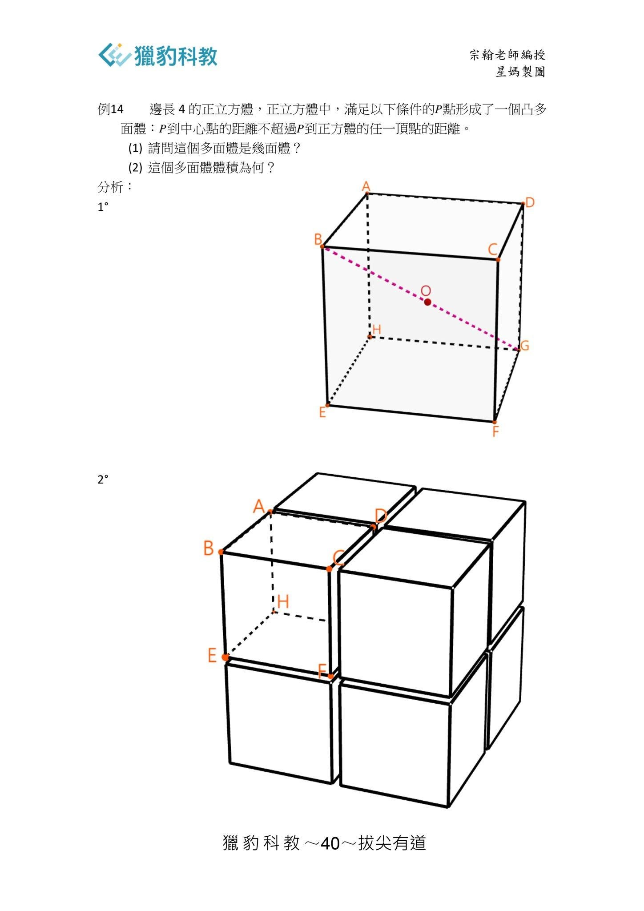

你在補習班學不到的方法~提升學生的「觀點」遠比教授他們「技巧」更重要
學習數學家如何思考
獵豹老師們教學生面對困難問題時，應學習數學家的思維方式。
也就是George Pólya所謂的「專家模式」：
將問題拆分、降維、簡化…
用不同的方式或角度來重述問題…
利用「對稱性」、「極端化」、「特殊化」…來分析問題
要練成一個真正的解題高手，不是去刷題海，更不是重複枯燥乏味的機械式練習，而是要學習數學家的思維方式，採取更高的觀點。
前兩天我在FA02講述S112「空間幾何的基礎課程」的這道題目時（下圖），要求學生看完問題 不要動筆 ，思考一下 ，然後說出第二小題的答案（這個多面體的體積）。
或許大家會疑惑 怎不是要求學生先回答第一小題？
如果我們連這個多面體的型態都還未能描述，怎可能求出它的體積呢？！（這個多面體是一個十四面體，請參考前幾天FB上 星媽用GGB呈現的的動畫）
呵 數學家的思維方式確實可以讓你繞過第一小題，並在很短的時間內正確回答第二小題！
上課時 我點名許庭誠來回答，他非常優秀且訓練有素，我只提供了一點引導他便立刻說出了正確答案。
如果你受過這種「專家模式」的訓練，你也可以做到！
首先我們很容易理解這個正立方體的八個頂點對於這問題而言是「對稱」的。
因此我們只需要取出正立方體中較靠近其中一個頂點B的區域來討論即可。
它是八分之一的小正立方體 ，對角線的兩端點是B與大正立方體的中心G(見下圖）
考慮在這個小正立方體中 「到G的距離不超過到B的點集」，因為對P而言B,G是對稱的，因此「到B的距離不超過到G的點集」應該是一樣大的！也就是說應各佔有一半的體積。
因此整個大正立方體中有一半的點 「到中心的距離不超過到任一個頂點的距離」！
所以，這些P點形成的多面體體積恰為32！
同學們看完以上分析，是否覺得學習「專家模式」遠比在那無邊的題海沈浮更能享受學習數學的樂趣！
